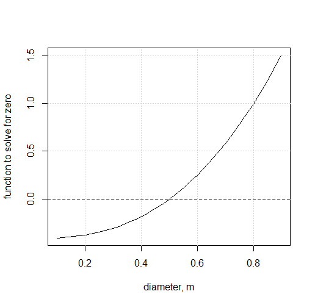

Chapter 4 Water Flowing in Pipes
Flow in civil engineering infrastructure is usually either in pipes, where it is not exposed to the atmosphere and flows under pressure, or open channels (canals, rivers, etc.). this chapter is concerned only with water flow in pipes.
Once water begins to move engineering problems often need to relate the flow rate to the energy dissipated. To accomplish this, the flow needs to be classified using dimensionless constants since energy dissipation varies with the flow conditions.
4.1 Important dimensionless quantity
As water begins to move, the characteristics are described by two quantities in engineering hydraulics: the Reynolds number, Re and the Froude number Fr. The latter is more important for open channel flow and will be discussed in that chapter.
Reynolds number describes the turbulence of the flow, defined by the ratio of kinematic forces, expressed by velocity V and a characteristic length such as pipe diameter, D, to viscous forces as expressed by the kinematic viscosity \(\nu\), as in Equation (4.1)
\[\begin{equation} Re=\frac{VD}{\nu} \tag{4.1} \end{equation}\]
For open channels the characteristic length is the hydraulic depth, the area of flow divided by the top width. For adequately turbulent conditions to exists, Reynolds numbers should exceed 4000 for full pipes, and 2000 for open channels.
4.2 Friction Loss in Circular Pipes
The energy at any point along a pipe containing flowing water is often described by the energy per unit weight, or energy head, E, as in Equation (4.2)
\[\begin{equation} E = z+\frac{P}{\gamma}+\alpha\frac{V^2}{2g} \tag{4.2} \end{equation}\] where P is the pressure, \(\gamma=\rho g\) is the specific weight of water, z is the elevation of the point, V is the average velocity, and each term has units of length. \(\alpha\) is a kinetic energy adjustment factor to account for non-uniform velocity distribution across the cross-section. \(\alpha\) is typically assumed to be 1.0 for turbulent flow in circular pipes because the value is close to 1.0 and \(\frac{V^2}{2g}\) (the velocity head) tends to be small in relation to other terms in the equation. Some applications where velocity varies widely across a cross-section, such as a river channel with flow in a main channel and a flood plain, will need to account for values of \(\alpha\) other than one.
As water flows through a pipe energy is lost due to friction with the pipe walls and local disturbances (minor losses). The energy loss between two sections is expressed as \({E_1} - {h_l} = {E_2}\). When pipes are long, with \(\frac{L}{D}>1000\), friction losses dominate the energy loss on the system, and the head loss, \(h_l\), is calculated as the head loss due to friction, \(h_f\).
This energy head loss due to friction with the walls of the pipe is described by the Darcy-Weisbach equation, which estimates the energy loss per unit weight, or head loss \({h_f}\), which has units of length. For circular pipes it is expressed by Equation (4.3)
\[\begin{equation} h_f = \frac{fL}{D}\frac{V^2}{2g} = \frac{8fL}{\pi^{2}gD^{5}}Q^{2} \tag{4.3} \end{equation}\]
In equation (4.3) f is the friction factor, typically calculated with the Colebrook equation (Equation (4.4)).
\[\begin{equation} \frac{1}{\sqrt{f}} = -2\log\left(\frac{\frac{k_s}{D}}{3.7} + \frac{2.51}{Re\sqrt{f}}\right) \tag{4.4} \end{equation}\]
In Equation (4.4) \(k_s\) is the absolute roughness of the pipe wall. There are close approximations to the Colebrook equation that have an explicit form to facilitate hand-calculations, but when using R or other computational tools there is no need to use approximations.
4.3 Solving Pipe friction problems
As water flows through a pipe energy is lost due to friction with the pipe walls and local disturbances (minor losses). For this example assume minor losses are negligible. The energy head loss due to friction with the walls of the pipe is described by the Darcy-Weisbach equation (Equation ((4.3))), which estimates the energy loss per unit weight, or head loss hf, which has units of length. The Colebrook equation (Equation (4.4)) is commonly plotted as a Moody diagram to illustrate the relationships between the variables (Figure 4.1).
hydraulics::moody()Figure 4.1: Moody Diagram
Because of the for of the equations, they can sometimes be a challenge to solve, especially by hand. It can help to classify the types of problems based on what variable is unknown. these are summarized in Table ??.
| Type | Known | Unknown |
|---|---|---|
| 1 | Q (or V), D, ks, L | hL |
| 2 | hL, D, ks, L | Q (or V) |
| 3 | hL, Q (or V), ks, L | D |
when solving by hand the types in Table ?? become progressively more difficult, but when using solvers the difference in complexity is subtle.
4.4 Solving for Head Loss (Type 1 problems)
The simplest pipe flow problem to solve is when the unknown is head loss, hf (equivalent to hL in the absence of minor losses), since all variables on the right side of the Darcy-Weisbach equation are known, except f.
4.4.1 Solving for head loss by manual iteration
While all unknowns are on the right side of Equation ((4.3)), iteration is still required because the Colebrook equation (Equation (4.4)) cannot be solved explicitly for f. An illustration of solving this type of problem is shown in Example @ref(exm:pipe-1.1).
(#exm:pipe-1.1) Find the head loss (due to friction) of 20\(^\circ\)C water in a pipe with the following characteristics: Q=0.416 m\(^3\)/s, L=100m, D=0.5m, ks=0.046mm.
Since the water temperature is known, first find the kinematic viscocity of water, \({\nu}\), since it is needed for the Reynolds number. This can be obtained from a table in a reference or using software. Here we will use the hydraulics R package.
nu <- hydraulics::kvisc(T=20, units="SI")
cat(sprintf("Kinematic viscosity = %.3e m2/s\n", nu))
#> Kinematic viscosity = 1.023e-06 m2/sWe will need the Reynolds Number to use the Colebrook equation, and that can be calculated since Q is known. This can be accomplished with a calculator, or using other software (R is used here):
Q <- 0.416
D <- 0.5
A <- (3.14/4)*D^2
V <- Q/A
Re <- V*D/nu
cat(sprintf("Velocity = %.3f m/s, Re = %.3e\n", V, Re))
#> Velocity = 2.120 m/s, Re = 1.036e+06Now the only unknown in the Colebrook equation is f, but unfortunately f appears on both sides of the equation.
To begin the iterative process, a first guess at f is needed. A reasonable value to use is the minimum f value, fmin, given the known \(\frac{k_s}{D}=\frac{0.046}{500}=0.000092=9.2\cdot 10^{-5}\). Reading horizontally from the right vertical axis to the left on the Moody diagram provides a value for \(f_{min}\approx 0.012\).
Numerically, it can be seen that f is independent of Re for large values of Re. When Re is large the second term of the Colebrook equation becomes small and the equation approaches Equation (4.5). \[\begin{equation} \frac{1}{\sqrt{f}} = -2\log\left(\frac{\frac{k_s}{D}}{3.7}\right) \tag{4.5} \end{equation}\] This independence of f with varying Re values is visible in the Moody Diagram (Figure 4.1) toward the right, where the lines become horizontal.
Using Equation (4.5) the same value of fmin=0.012 is obtained, since the colebrook equation defines the Moody diagram.
Iteration 1: Using f=0.012 the right side of the Colebrook equation is 8.656. the next estimate for f is then obtained by \(\frac{1}{\sqrt{f}}=8.656\) so f=0.0133.
Iteration 2: Using the new value of f=0.0133 in the right side of the Colebrook equation produces 8.677. A new value for f is obtained by \(\frac{1}{\sqrt{f}}=8.677\) so f=0.0133. The solution has converged!
Using the new value of f, the value for hf is calculated: \[h_f = \frac{8fL}{\pi^{2}gD^{5}}Q^{2}=\frac{8(0.0133)(100)}{\pi^{2}(9.81)(0.5)^{5}}(0.416)^{2}=0.061 m\] ### Solving for headloss using an empirical approximation {#dwapprox}
A shortcut that can be used to avoid iterating to find the friction factor is to use an approximation to the Colebrook equation that can be solved explicitly. One example is the Haaland equation (4.6) (Haaland 1983). \[\begin{equation} \frac{1}{\sqrt{f}} = -1.8\log\left(\left(\frac{\frac{k_s}{D}}{3.7}\right)^{1.11}+\frac{6.9}{Re}\right) \tag{4.6} \end{equation}\]
For ordinary pipe flow conditions in water pipes, Equation (4.6) is accurate to within 1.5% of the Colebrook equation. There are many other empirical equations, one common one being that of Swamee and Jain (Swamee and Jain 1976), shown in Equation (4.7). \[\begin{equation} \frac{1}{\sqrt{f}} = -2\log\left(\frac{\frac{k_s}{D}}{3.7}+\frac{5.74}{Re^{0.9}}\right) \tag{4.7} \end{equation}\]
These approximations are useful for solving problems by hand or in spreadsheets, and their accuracy is generally within the uncertainty of other input variables like the absolute roughness.
4.4.2 Solving for head loss using an equation solver
Rather than use an empirical approximation (as in Section ??) to the Colebrook equation, it is straightforward to apply an equation solver to use the Colebrook equation directly. This is demonstrated in Example @ref(exm:pipe-1.2).
(#exm:pipe-1.2) Find the friction factor for the same conditions as Example @ref(exm:pipe-1.1): D=0.5m, ks=0.046mm, and Re=1.036e+06.
First, rearrange the Colebrook equation so all terms are on one side of the equation, as in Equation (4.8). \[\begin{equation} -2\log\left(\frac{\frac{k_s}{D}}{3.7} + \frac{2.51}{Re\sqrt{f}}\right) - \frac{1}{\sqrt{f}}=0 \tag{4.8} \end{equation}\]
Create a function using whatever equation solving platform you prefer. Here the R software is used:
colebrk <- function(f,ks,D,Re) -2.0*log10((ks/D)/3.7 + 2.51/(Re*(f^0.5)))-1/(f^0.5)Find the root of the function (where it equals zero), specifying a reasonable range for f values using the interval argument:
f <- uniroot(colebrk, interval = c(0.008,0.1), ks=0.000046, D=0.5, Re=1.036e+06)$root
cat(sprintf("f = %.4f\n", f))
#> f = 0.0133The same value for hf as above results.
4.4.3 Solving for head loss using an R package
Equation solvers for implicit equations, like in Section 4.4.2, are built into the R package hydraulics. that can be applied directly, without writing a separate function.
(#exm:pipe-1.3) Using the hydraulics R package, find the friction factor and head loss for the same conditions as Example @ref(exm:pipe-1.2): Q=0.416 m3/s, L=100 m, D=0.5m, ks=0.046mm, and nu = 1.023053e-06 m2/s.
ans <- hydraulics::darcyweisbach(Q = 0.416,D = 0.5, L = 100, ks = 0.000046,
nu = 1.023053e-06, units = c("SI"))
#> hf missing: solving a Type 1 problem
cat(sprintf("Reynolds no: %.0f\nFriction Fact: %.4f\nHead Loss: %.2f ft\n",
ans$Re, ans$f, ans$hf))
#> Reynolds no: 1035465
#> Friction Fact: 0.0133
#> Head Loss: 0.61 ftIf only the f value is needed, the colebrook equation can be used.
f <- hydraulics::colebrook(ks=0.000046, V= 2.120, D=0.5, nu=1.023e-06)
cat(sprintf("f = %.4f\n", f))
#> f = 0.0133Notice that the colebrook function needs input in dimensionally consistent units. Because it is dimensionally homogeneous and the input dimensions are consistent, the unit system does not need to be defined like with many other functions in the hydraulics package.
4.5 Solving for Flow or Velocity (Type 2 problems)
When flow (Q) or velocity (V) is unknown, the Reynolds number cannot be determined, complicating the solution of the Colebrook equation. As with Secion 4.4 there are several strategies to solving these, ranging from iterative manual calculations to using software packages. For Type 2 problems, since D is known, once either V or Q is known, the other is known, since \(Q=V{\cdot}A=V\frac{\pi}{4}D^2\).
4.5.1 Solving for Q (or V) using manual iteration
Solving a Type 2 problem can be done with manual iterations, as demonstrated in Example @ref(exm:pipe-2.1).
(#exm:pipe-2.1) find the flow rate, Q of 20oC water in a pipe with the following characteristics: hf=0.6m, L=100m, D=0.5m, ks=0.046mm.
First rearrange the Darcy-Weisbach equation to express V as a function of f, substituting all of the known quantities: \[V = \sqrt{\frac{h_f}{L}\frac{2gD}{f}}=\frac{0.243}{\sqrt{f}}\]
That provides one equation relating V and f. The second equation relating V and f is one of the friction factor equations, such as the Colebrook equation or its graphic representation in the Moody diagram. An initial guess at a value for f is obtained using fmin=0.012 as was done in Example @ref(exm:pipe-1.1).
Iteration 1: \(V=\frac{0.243}{\sqrt{0.012}}=2.218\); \(Re=\frac{2.218\cdot 0.5}{1.023e-06}=1.084 \cdot 10^6\). A new f value is obtained from the Moody diagram or an equation using the new Re value: \(f \approx 0.0131\)
Iteration 2: \(V=\frac{0.243}{\sqrt{0.0131}}=2.123\); \(Re=\frac{2.123\cdot 0.5}{1.023e-06}=1.038 \cdot 10^6\). A new f estimate: \(f \approx 0.0132\)
The function converges very quickly if a reasonable first guess is made. Using V=2.12 m/s, \(Q = AV = \left(\frac{\pi}{4}\right)D^2V=0.416 m^3/s\)
4.5.2 Solving for Q Using an Explicit Equation
Solving Type 2 problems using iteration is not necessary, since an explicit equation based on the Colebrook equation can be derived. Solving the Darcy Weisbach equation for \(\frac{1}{\sqrt{f}}\) and substituting that into the Colebrook equation produces Equation (4.9). \[\begin{equation} Q=-2.221D^2\sqrt{\frac{gDh_f}{L}} \log\left(\frac{\frac{k_s}{D}}{3.7} + \frac{1.784\nu}{D}\sqrt{\frac{L}{gDh_f}}\right) \tag{4.9} \end{equation}\]
This can be solved explicitly for Q=0.413 m3/s.
4.5.3 Solving for Q Using an R package
Using software to solve the problem allows the use of the Colebrook equation in a straightforward format. The hydraulics package in R is applied to the same problem as above.
ans <- hydraulics::darcyweisbach(D=0.5, hf=0.6, L=100, ks=0.000046, nu=1.023e-06, units = c('SI'))
knitr::kable(format(as.data.frame(ans), digits = 3), format = "pipe")| Q | V | L | D | hf | f | ks | Re |
|---|---|---|---|---|---|---|---|
| 0.406 | 2.07 | 100 | 0.5 | 0.6 | 0.0133 | 4.6e-05 | 1010392 |
The answer differs from the manual iteration by just over 2%, showing remarkable consistency.
4.6 Solving for pipe diameter, D (Type 3 problems)
When D is unknown, neither Re nor relative roughness \(\frac{ks}{D}\) are known. Referring to the Moody diagram (Figure 4.1), the difficulty in estimating a value for f (on the left axis) is evident since the positions on either the right axis (\(\frac{ks}{D}\)) or x-axis (Re) are known.
4.6.1 Solving for D using manual iterations
Solving for D using manual iterations is done by first rearranging Equation (4.9) to allow it to be solved for zero, as in Equation (4.10). \[\begin{equation} -2.221D^2\sqrt{\frac{gDh_f}{L}} \log\left(\frac{\frac{k_s}{D}}{3.7} + \frac{1.784\nu}{D}\sqrt{\frac{L}{gDh_f}}\right)-Q=0 \tag{4.10} \end{equation}\]
Using this with manual iterations is demonstrated in Example @ref(exm:pipe-3.1).
(#exm:pipe-3.1) For a similar problem to @ref(exm:pipe-2.1) use Q=0.416m3/s and solve for the required pipe diameter, D.
This can be solved manually by guessing values and repeating the calculation in a spreadsheet or with a tool like R.
Iteration 1: Guess an arbitrary value of D=0.3m. Solve the left side of Equation (4.10) to obtain a value of -0.31
Iteration 2: Guess another value for D=1.0m. The left side of Equation (4.10) produces a value for the function of 2.11
The root, when the function equals zero, lies between the two values, so the correct D is between 0.3 and 1.0. Repeated values can home in on a solution. Plotting the results from many trials can help guide toward the solution.  The root is seen to lie very close to D=0.5 m. Repeated trials can home in on the result.
4.6.2 Solving for D using an equation solver
An equation solver automatically accomplishes the manual steps of the prior demonstration. The equation from 1.6 can be written as a function that can then be solved for the root, again using R software for the demonstration:
q_fcn <- function(D, Q, hf, L, ks, nu, g) {
-2.221 * D^2 * sqrt(( g * D * hf)/L) * log10((ks/D)/3.7 + (1.784 * nu/D) * sqrt(L/(g * D * hf))) - Q
}The uniroot function can solve the equation in R (or use a comparable approach in other software) for a reasonable range of D values
ans <- uniroot(q_fcn, interval=c(0.01,4.0),Q=0.416, hf=0.6, L=100, ks=0.000046, nu=1.023053e-06, g=9.81)$root
cat(sprintf("D = %.3f m\n", ans))
#> D = 0.501 m